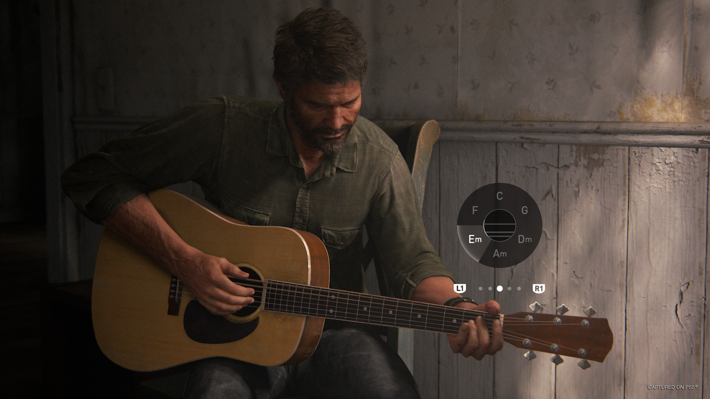

JOEL MILLER
"Se de alguma forma o Senhor me desse uma segunda chance naquele momento... Eu faria tudo de novo." — Joel para Ellie
Joel é um contrabandista implacável do mercado paralelo. Independente e inteligente, uma perda traumática acaba por endurecê-lo. Em sua jornada, ele encontra a força para se tornar uma figura paterna e lutar por um futuro melhor para si e para Ellie.
Cinco anos depois, Joel se estabeleceu em Jackson, Wyoming, junto com o irmão Tommy, a esposa de Tommy, Maria, e, é claro, Ellie. Embora ele não se arrependa da decisão tomada cinco anos antes, logo precisará enfrentar as consequências de suas ações.
Antes da narrativa
Joel nasceu em 1981, no Texas, e cresceu ao lado de seu irmão mais novo, Tommy.
Desde criança, Joel desenvolveu paixão pela música, aprendeu a tocar violão e chegou a pensar sobre uma carreira como cantor. Teve uma filha, Sarah, e foi casado com a mãe dela por um curto período. Tendo assumido as responsabilidades da paternidade ainda muito jovem, ele nunca teve a oportunidade de cursar a faculdade.
Joel trabalhava como carpinteiro ao lado de Tommy. Apesar das longas e exaustivas jornadas de trabalho, ainda conseguia passar momentos de qualidade com Sarah, visível em fotografias espalhadas pela sua casa que registram os dois em um cruzeiro, em um parque de diversões com Tommy e em uma das partidas de futebol de Sarah; eles costumavam fazer várias trilhas juntos, e Sarah fez Joel leva-lá a todos os museus do Texas.